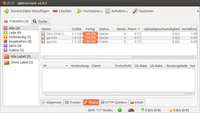
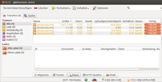
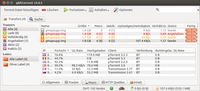

qBittorrent
Dieser Artikel wurde für die folgenden Ubuntu-Versionen getestet:
Ubuntu 14.04 Trusty Tahr
Zum Verständnis dieses Artikels sind folgende Seiten hilfreich:
qBittorrent  ist ein optisch ansprechender Bittorrent-Client, der noch aktiv entwickelt wird. Die Anwendung wartet mit allen gängigen Funktionen eines guten grafischen Clients auf, darunter viele detaillierte Optionseinstellungen und natürlich auch eine deutsche Sprachunterstützung. Daneben können auch neue Torrents erstellt werden.
ist ein optisch ansprechender Bittorrent-Client, der noch aktiv entwickelt wird. Die Anwendung wartet mit allen gängigen Funktionen eines guten grafischen Clients auf, darunter viele detaillierte Optionseinstellungen und natürlich auch eine deutsche Sprachunterstützung. Daneben können auch neue Torrents erstellt werden.

Installation¶
qBittorent ist in den offiziellen Paketquellen enthalten, zum Installieren[1] ist folgendes Paket erforderlich:
qbittorrent (universe)
 mit apturl
mit apturl
Paketliste zum Kopieren:
sudo apt-get install qbittorrent
sudo aptitude install qbittorrent
Nach der Installation sind keine weiteren Einstellungen vorzunehmen.
PPA¶
Die aktuellste Version ist über ein "Personal Package Archiv" (PPA) [2] erhältlich:
Adresszeile zum Hinzufügen des PPAs:
ppa:qbittorrent-team/qbittorrent-stable
Hinweis!
Zusätzliche Fremdquellen können das System gefährden.
Ein PPA unterstützt nicht zwangsläufig alle Ubuntu-Versionen. Weitere Informationen sind der  PPA-Beschreibung des Eigentümers/Teams qbittorrent-team zu entnehmen.
PPA-Beschreibung des Eigentümers/Teams qbittorrent-team zu entnehmen.
Damit Pakete aus dem PPA genutzt werden können, müssen die Paketquellen neu eingelesen werden.
Nach dem Aktualisieren der Paketquellen erfolgt die Installation wie oben angegeben.
Bedienung¶
Das Programm kann gleich nach der Installation gestartet [3] werden. Bei Ubuntu-Varianten mit einem Anwendungsmenü findet man das Programm unter "Internet -> qBittorrent", unter Unity über die Eingabe von qBittorrent.

Torrent hinzufügen¶
Um einen Torrent hinzuzufügen, einen Linksklick  auf "Torrent-Datei hinzufügen" ausführen. Es öffnet sich ein weiteres Fenster, in dem die Torrent-Datei gewählt wird. Eine Torrent-Datei ist im Normalfall nur wenige Kilobyte groß. Nach der Auswahl der Torrent-Datei mit "Öffnen" bestätigen.
auf "Torrent-Datei hinzufügen" ausführen. Es öffnet sich ein weiteres Fenster, in dem die Torrent-Datei gewählt wird. Eine Torrent-Datei ist im Normalfall nur wenige Kilobyte groß. Nach der Auswahl der Torrent-Datei mit "Öffnen" bestätigen.
Achtung!
Einen selbst erstellten Torrent bitte nicht hinzufügen! Siehe Torrent importieren.

Torrent löschen¶
Um einen Torrent zu löschen, einen Linksklick auf den Torrent ausführen, um diesen zu markieren. Nun einen Linksklick auf "löschen" ausführen. Es öffnet sich ein weiteres Fenster, hier auch das Kästchen markieren "Datei auch von der Festplatte löschen". Abschließend mit "OK" bestätigen. Nun ist der Torrent mit der zugehörigen Datei gelöscht.
Hinweis:
Dies löscht auch die heruntergeladene Datei aus dem Verzeichnis
Torrent anhalten¶
Bei gleichzeitig mehreren Torrents können auch einzelne Torrents angehalten werden. Um einen Torrent anzuhalten, einen Linksklick auf den Torrent ausführen, um diesen zu markieren. Nun einen Linksklick auf "Anhalten" ausführen. Der Torrent ist noch vorhanden, aber angehalten/pausiert.
Bereits vorhandene Daten in der Torrentzieldatei gehen beim Anhalten nicht verloren.
Torrent fortsetzen¶
Um einen angehaltenen Torrent fortzusetzen, einen Linksklick auf den Torrent ausführen, um diesen zu markieren. Nun einen Linksklick auf "Fortsetzen" ausführen. Der Torrent ist nun wieder aktiv und die Übertragungsraten werden wieder angezeigt.

Torrent erstellen¶
Um einen eigenen Torrent zu erstellen, einen Linksklick auf das Register "Werkzeuge" ausführen. Im Register nun mit einem Linksklick den "Torrenterschaffer" öffnen.
Im folgenden Fenster können Dateien oder gesamte Verzeichnisse für den Torrent ausgewählt werden. Je nach dem, was erfolgen soll, ist die entsprechende Schaltfläche zu nutzen. Nach der Auswahl im ersten Fenster "Tracker URLs:" einige Tracker eingeben. Beispiele:
http://genesis.1337x.org:1337/announce http://exodus.1337x.org/announce http://tracker.ilibr.org:6969/announce http://tracker.token.ro/announce http://11.rarbg.com/announce http://10.rarbg.com/announce http://denis.stalker.h3q.com/announce http://photodiode.mine.nu/announce
Im unteren Fenster "Kommentar" kann ein Kommentar über den Torrent eingegeben werden. Der Kommentar wird anderen Torrent-Nutzern dann angezeigt. Es ist hilfreich, hier wichtige Informationen den Torrent betreffend anzugeben.
Abschließend den Torrent erstellen mit einem Linksklick auf "Erstellen und speichern". Im folgenden Fenster den Zielordner und Name für den erstellten Torrent angeben, z.B. ~/Arbeitsfläche/. Dann hat man den Torrent gleich sichtbar auf der Desktop-Oberfläche.
Achtung!
Den selbst erstellten Torrent nicht hinzufügen! Siehe Torrent importieren.

Torrent importieren¶
Um einen selbst erstellten Torrent zu verteilen, einen Linksklick auf das Register "Datei" ausführen. Im Register nun mit einem Linksklick das Menü "existierendes Torrent importieren" öffnen. Im neuen Fenster in der ersten Zeile "Zu importierende Datei öffnen" den erstellten Torrent öffnen. In der zweiten Zeile "Speicherstelle des Inhalts" wieder die zu verteilende Datei/Verzeichnis öffnen. Abschließend mit einem Linksklick auf Import den selbst erstellten Torrent importieren.
Der Torrent wird dann als leer in der Liste gezeigt. Dann beginnt die Überprüfung und der Torrent wird mit 100% fertig verteilt. Eine zu verteilende Datei/Verzeichnis muss nicht unbedingt im qBittorent-Speicher-Verzeichnis liegen.
Nachdem der Torrent importiert wurde, einen Rechtsklick  auf den Torrent ausführen. Es öffnet ein Register, hier einen Linksklick auf "Shareverhältnis begrenzen" ausführen. Nun den Punkt bei "Keine Begrenzung für das Verhältnis setzen" mit einem Linksklick setzen. Abschließend mit "OK" bestätigen.
auf den Torrent ausführen. Es öffnet ein Register, hier einen Linksklick auf "Shareverhältnis begrenzen" ausführen. Nun den Punkt bei "Keine Begrenzung für das Verhältnis setzen" mit einem Linksklick setzen. Abschließend mit "OK" bestätigen.
Peers & Seeds¶

Um ausführliche Informationen über Peers und Seeds zu erhalten, ist ein externer Tracker nötig. Die Nutzung ist in der Regel kostenlos, z.B. über The Pirate Bay  . Nach der Erstellung eines Benutzerkontos kann über den Link "Torrent hochladen" ein selbst erstellter Torrent hochgeladen werden. Es sind nur die nötigen Zeilen in der Maske einzugeben.
. Nach der Erstellung eines Benutzerkontos kann über den Link "Torrent hochladen" ein selbst erstellter Torrent hochgeladen werden. Es sind nur die nötigen Zeilen in der Maske einzugeben.
Nachdem der Torrent hochgeladen wurde, wird der unterstützte Torrent, der im neuen Fenster angezeigt wird, wieder in das Verzeichnis Downloads heruntergeladen und gespeichert. Jetzt den Torrent über die Schaltfläche "Torrent-Datei hinzufügen" hinzufügen.
Hinweis:
Auf den selben Speicherort achten!
Jetzt werden die Peers und Seeds angezeigt. Nach der Überprüfung steht die Anzeige auf 100%.
Super-Seeding-Modus¶

Nach dem Hochladen eines Torrent sollte bei wenigen Seedern (ca. 2-5) und vielen Leechern der "Super-Seeding-Modus" verwendet werden. Durch einen Rechtsklick auf den laufenden Torrent öffnet sich ein Register. Im Register mit einem Linksklick diesen aktivieren. Nach der Aktivierung des "Super-Seeding-Modus" muss qBittorrent neu gestartet werden.
qBittorrent erkennt die Leecher, die die Weiterleitung unterstützen und nicht sperren. Zu diesen Leechern baut qBittorrent die Verbindung zuerst auf, um eine optimale und schnelle Verteilung zu ermöglichen. Ebenso wird bei den Leechern geprüft, welches Teil am seltesten zur Verfügung steht, dieses wird dann verteilt.
Hinweis:
Der Super-Seeding-Modus macht erst Sinn (bei nur einem Seeder und einer vollständigen Quelle), wenn schon mind. 25% verteilt sind!
 Übersichtsartikel
Übersichtsartikel- Erstellt mit Inyoka
-
 2004 – 2017 ubuntuusers.de • Einige Rechte vorbehalten
2004 – 2017 ubuntuusers.de • Einige Rechte vorbehalten
Lizenz • Kontakt • Datenschutz • Impressum • Serverstatus -
Serverhousing gespendet von